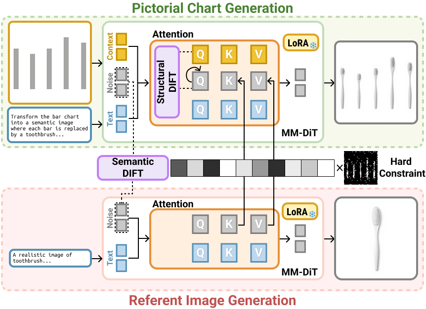
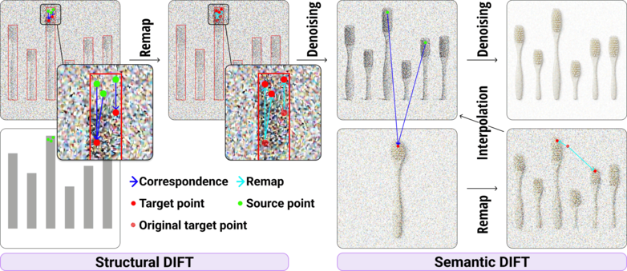
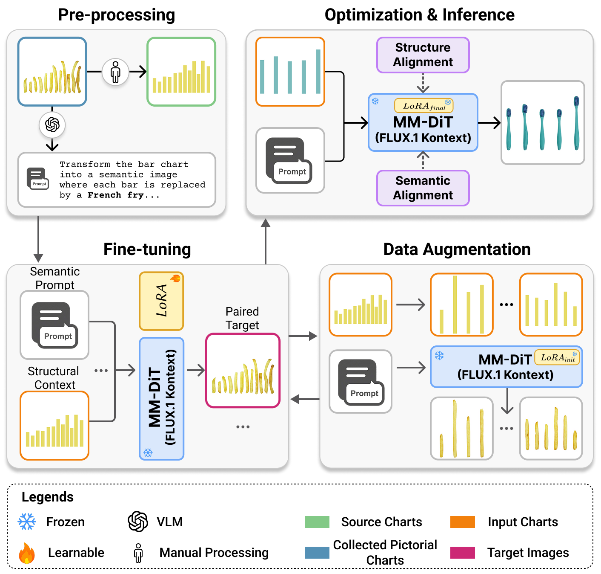
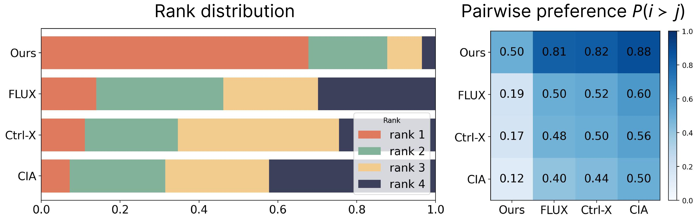
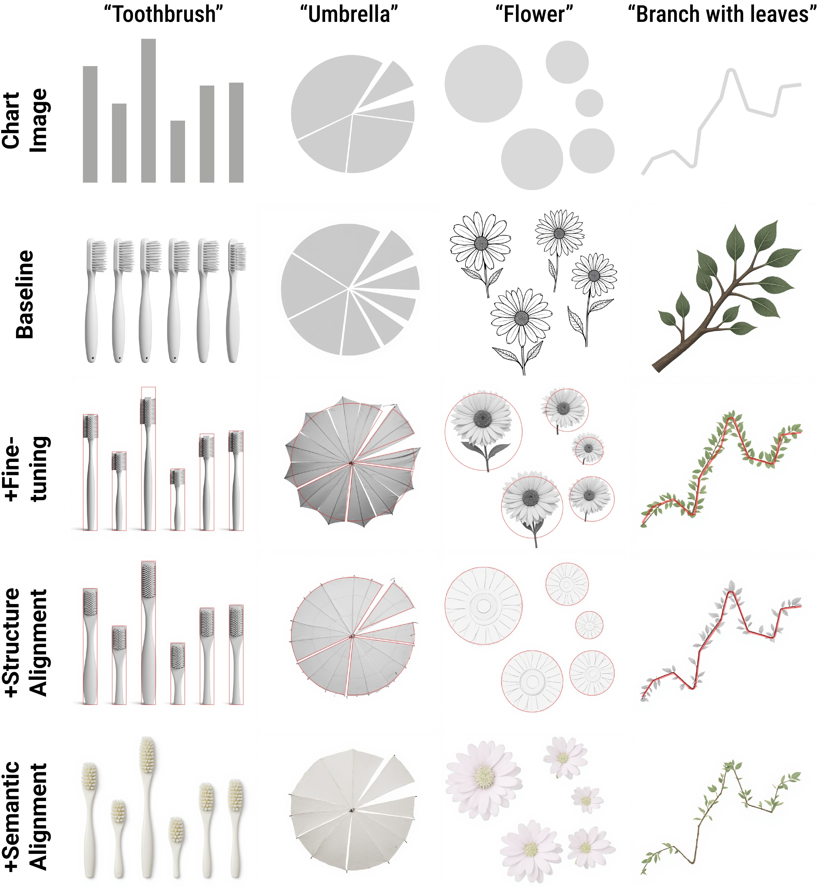
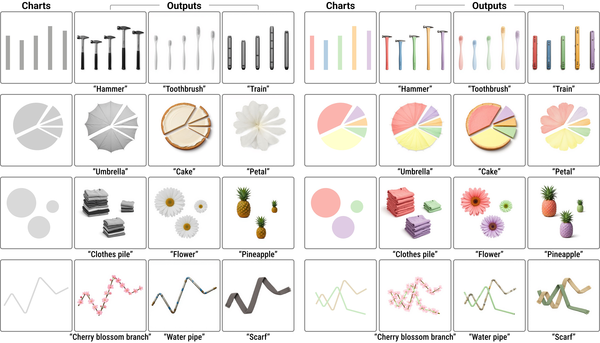
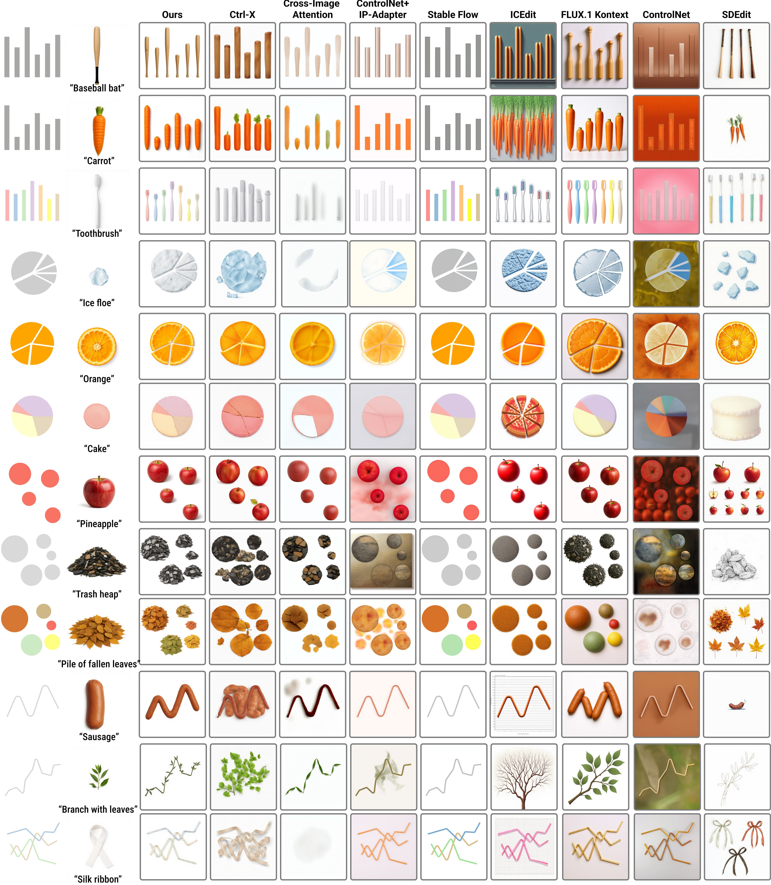
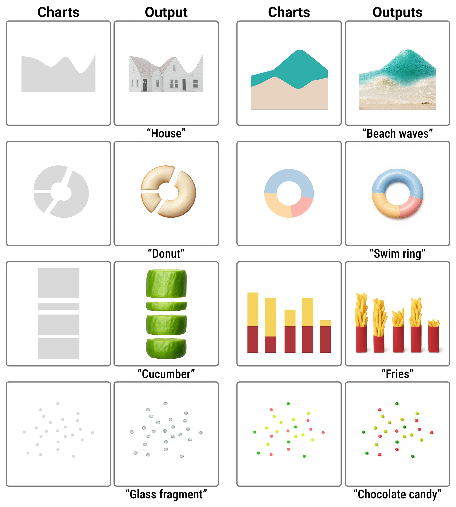
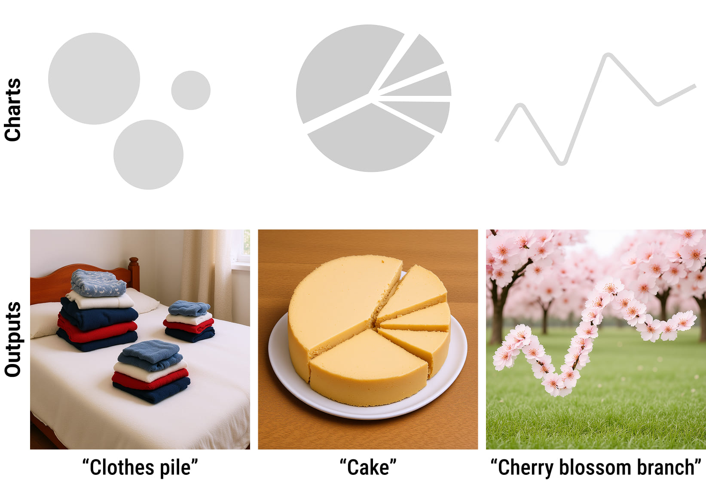

Research Questions
This research tackles the tension between the creative expressiveness of generative AI and the strict data constraints of information visualization. Here are the core research questions your work addresses:
- RQ1
- How can we leverage generative AI to enable expressive semantic synthesis in pictorial charts without compromising the strict structural fidelity and informational integrity of the underlying data?
- RQ2
- How can structural invariants be effectively disentangled from semantic expression to allow for controllable, dual-conditioned (text-guided and reference-guided) chart generation?
- RQ3
- Can an autonomous structural alignment approach generalize across diverse and complex chart topologies (e.g., area charts, stacked bar charts, scatter plots) while maintaining precise, continuous spatial data encoding?
- RQ4
- How does an end-to-end autonomous framework compare against existing human-in-the-loop, domain-specific tools (e.g., ChartSpark) and general image-editing baselines in achieving the optimal balance between visual cohesiveness and spatial accuracy?
Method

Method overview. Given a source chart image and a textual prompt, we provide them as the contextual image condition and textual condition, respectively. To enforce strong structural consistency and enable expressive semantic synthesis, we introduce Structural DIFT and Semantic DIFT. These operations are performed within the self-attention layers of the single-stream blocks in the MM-DiT.

The DIFT Remapping Process. (a) Structural DIFT: Dense correspondence (Cc→tgt, blue arrows) is computed between the reference chart queries (Qc, green points) and the target queries (Qtgt, red points). Based on this correspondence, the target features are spatially remapped (cyan arrows) to new positions, aligning their geometric layout with the structural arrangement of the reference chart. (b) Semantic DIFT: Using the established correspondence (Ctgt→ref) between the target features (Htgt, green points) and the reference features (Href, red points), the reference keys (Kref) and values (Vref) are spatially remapped. These are subsequently interpolated with the target keys (Ktgt) and values (Vtgt) to fuse the semantic attributes.

Training pipeline. Overview of our progressive data curation and fine-tuning strategy: (a) Data Preprocessing: We pair manually collected pictorial charts with reverse-engineered geometric source charts, generating corresponding text prompts via a Vision-Language Model (VLM). (b) Fine-Tuning \& Data Augmentation: A baseline LoRA is fine-tuned on this small seed dataset and subsequently utilized to autonomously synthesize a large-scale, structurally diverse augmented dataset. (c) Optimization \& Inference: The augmented data spanning multiple visual encoding channels is aggregated for a final, comprehensive LoRA fine-tuning, equipping the model with a robust generative prior for expressive semantic synthesis.
Evaluation

Visualization of User Study Results. Rank distribution (left) and pairwise preference heat map (right) comparing our method against Ctrl-X, CIA, and FLUX.1 Kontext. The results demonstrate a significant user preference for our dual-conditioned method in balancing structural fidelity with high-quality semantic synthesis. Participant rankings demonstrate a strong consensus, with our method preferred (67.8\% of trials) over baselines.

Ablation Study. Columns demonstrate the progressive integration of specific modules across different themes (rows). The full method (bottom row) ensures both strict structural alignment and robust semantic synthesis.
Results

Qualitative Results. Our method generates diverse pictorial charts, preserving data-encoding colors and spatial structure during semantic synthesis.

Qualitative Comparison. We compare our method against eight baselines for controllable generation and image editing: Ctrl-X, CIA, ControlNet+IP-Adapter, Stable Flow, ICEdit, FLUX.1 Kontext, ControlNet, and SDEdit. The first three columns feature reference-guided methods utilizing an additional semantic reference image, while the remaining columns display text-guided methods relying solely on the source chart and prompt. Across these diverse conditions, our method achieves the optimal balance, performing expressive semantic synthesis while strictly preserving the structural fidelity of the original chart.

Generalization Across Chart Topologies.. High-fidelity semantic synthesis and structural alignment applied to diverse chart topologies, including area charts, donut charts, stacked bar charts, and scatter plots.

Future Explorations: Holistic Scene Generation. Contextually coherent backgrounds are currently achieved by expanding the base text prompt. Because explicit background control is not an objective of the current method, holistic scene generation relies heavily on the underlying model's prior, which can be disrupted by the chart-focused alignment mechanism. These preliminary results demonstrate the potential for full-scene data storytelling, underscoring the need for unified control mechanisms that govern background synthesis without compromising analytical legibility.
Reflection
Reflecting on the trajectory of this research, we recognize that the fundamental challenge of generative pictorial visualization lies in reconciling the unconstrained expressiveness of underlying AI models with the rigorous analytical demands of data representation. Our framework demonstrates that this tension is not insurmountable; by explicitly disentangling structural invariants from semantic features, we can achieve expressive semantic synthesis without sacrificing structural fidelity. For the visualization community, we provide a method for chart generation explicitly driven by data storytelling purposes. Simultaneously, for the computer graphics field, this work serves as a preliminary but critical trial in strictly controlling geometric structures during generative image synthesis. While our explorations into holistic scene generation highlight the ongoing difficulty of perfectly balancing automated background synthesis with strict foreground constraints, they also illuminate a clear path forward. Ultimately, this research establishes a foundational step toward a future where human creativity and artificial intelligence can collaboratively transform abstract data into resonant, visually compelling narratives.